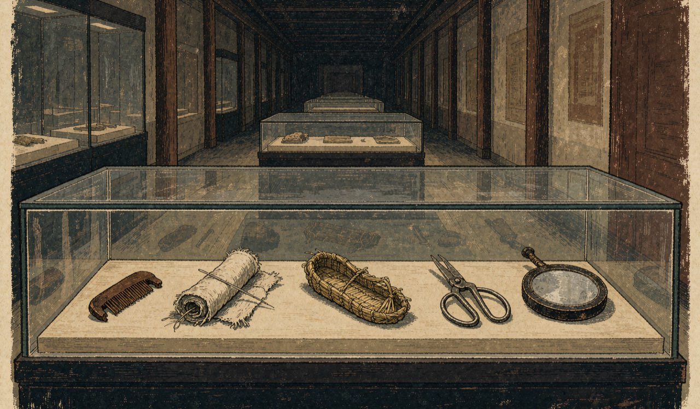
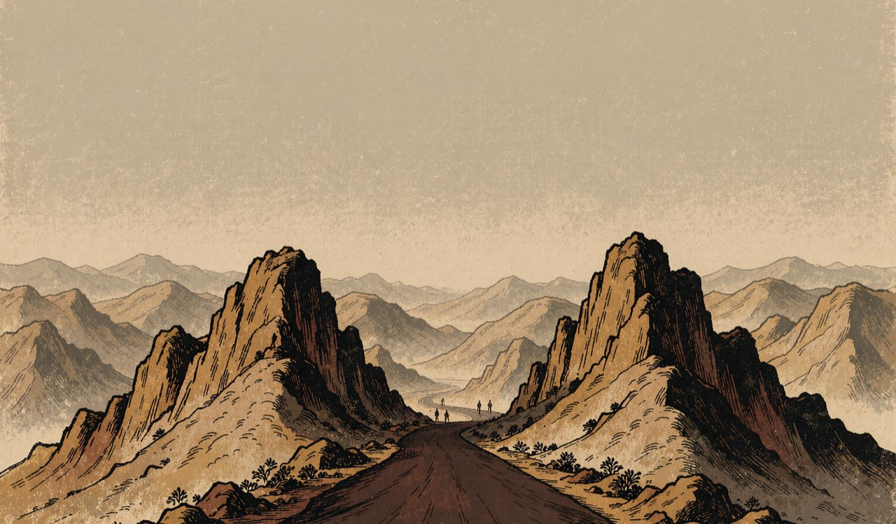
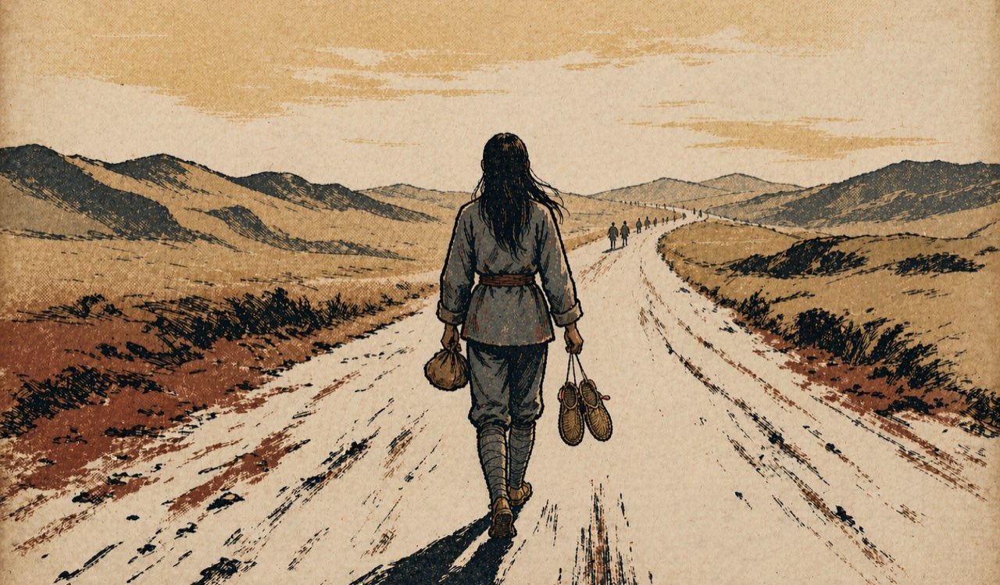

她们会一直走
那条路留了下来

她们用过的东西，后来大多丢了，坏了，扔了。但有一些被后人捡了回来，放进纪念馆的展柜里。
木梳，针线包，草鞋，防滑的钉鞋，绣着五角星的针线包。展柜的标签上，有的写着名字，有的只写着“红军女战士”。

照片上有十二个人，名单上有三十个名字，走到陕北的有二十四个人。
她们到了陕北。有的到了，有的没有。
到了的人没有停下。她们继续走，走到各自的岗位上，走到新中国的每一个天亮。

那条路留了下来。
从瑞金到陕北，从陕北到更远的地方。有人在走。
本 章 完 整 原 文
结语
30个名字，写在1934年秋天瑞金的一页纸上。
那页纸跟着队伍走了很远。写名单的人自己也在名单上，她带着那支钢笔，从江西走到陕北。钢笔丢了笔帽，墨水干了，名单上的字还在。
她们用过的东西，后来大多丢了，坏了，扔了。但有一些被后人捡了回来，放进纪念馆的展柜里。木梳，针线包，草鞋，防滑的钉鞋，绣着五角星的针线包。展柜的标签上，有的写着名字，有的只写着“红军女战士”。
照片上有十二个人，名单上有三十个名字，走到陕北的有二十四个人。
她们到了陕北。有的到了，有的没有。
到了的人没有停下。她们继续走，走到各自的岗位上，走到新中国的每一个天亮。后来，合影上的人一个一个少了，名单上的人一个一个走了。
那条路留了下来。
从瑞金到陕北，从陕北到更远的地方。
有人在走。
她们会一直走。
资料 · 09 / 09
资料与图像来源
本页汇总17 项史料 · 八章插画 · 八件三维物件 · 结语背景影像
史料与数据
17 项 · 查阅日期 2026-10-19
-
S01
人民网 · 军事
《盘点 30 位参加过长征的红军女战士》
用于：第一、二、三、四、六、七、八章及结语
支撑：30 人出发、24 人到达陕北、女红军岗位与人物经历。
-
S02
中国军网
《女红军如何走过万水千山》
用于：第一章及结语
支撑：随军条件、32 人拟定与 30 人出发、四路红军女红军总体情况。
-
S03
中国军网
《三千多名女红军写下长征史上光辉的一页》
用于：第三、六、七章及结语
支撑：转战阶段的整编、护理、妇女抗日先锋团及相关人物经历。
-
S04
党史学习教育官网
《解读长征（13）：长征中有多少女红军胜利到达陕北？》
用于：第一、七章及结语
支撑：到达陕北人数口径、妇女独立师成立与减员的不同统计口径。
-
S05
人民网 · 姜廷玉（中国人民革命军事博物馆研究员）
《数一数：参加长征并胜利到达陕北的女红军！》
用于：第一、四、六、七、八章及结语
支撑：30 位女红军姓名与经历、24 人到达陕北、王泽南与康克清等事迹。
-
S07
新华网
《突破时代和国界的神话：长征路上的女红军》
用于：第一、七章及结语
支撑：四路红军女红军群像、路线示意与叙事背景。
-
S09
党史学习教育官网
《谁在襁褓中参加了长征》
用于：第二、五章
支撑：贺捷生、任远征等随军婴儿，以及“破例带上孩子”的经过。
-
S10
央视网《东方之子》
《女红军讲长征路上的故事》（钟月林、王泉媛口述）
用于：第二、四、五、七章
支撑：行军、筹粮、分娩与婴幼儿随军的口述记录。
-
S11
中国军网 · 图片频道
《这个马鞍来头大：主席的夫人骑过它》
用于：第二、五、六章
支撑：桐梓途中分娩、贺子珍在盘县掩护伤员中弹等经历。
-
S12
中国妇女儿童博物馆
《蹇先任、蹇先佛：长征路上姐妹花》
用于：第二、五章
支撑：蹇先任背着出生 18 天的婴儿行军、蹇先佛孕期刻蜡版。
-
S13
中国西藏网
《任弼时女儿：降生在长征途中一户藏族同胞家的羊圈里》
用于：第二、五章
支撑：任远征出生地点与随军背景。
-
S14
光明网 · 中华读书报
《贺捷生：我不仅要同遗忘作斗争》
用于：第二章
支撑：贺捷生本人对出生、随军与家庭记忆的自述。
-
S15
人民网
《吃百家饭长大的毛岸英（毛泽东：干革命不得不丢下下一代）》
用于：第二章
支撑：出发前托付小毛，以及贺子珍关于“丢下下一代”的自述。
-
S16
人民网 · 党史频道
《解读长征（10）：中央红军长征中的兵力变化》
用于：第三、八章及结语
支撑：8.6 万 → 3 万 → 3.7 万 → 吴起镇 7000 余人的兵力链条。
-
S17
川观新闻 · 雅安市人民政府
《夹金山王母寨垭口高程与红军翻山路线报道》
用于：第七章
支撑：王母寨垭口 4114 米高程与翻越夹金山路线。
-
S18
中国政府网
《而今迈步从头越》
用于：第五、七章及结语
支撑：四渡赤水时间线、长征综述与到达陕北的叙事背景。
-
S19
人民网 · 中国共产党新闻网 党史频道
《解读长征系列报道》
用于：第五章
支撑：陈慧清在赤水河边临产、董振堂命令部队阻击追兵。
使用说明
正文中的史实、数字和口述材料按章归并列出；同一来源只出现一次，并在“用于”一行标明对应章节。不同来源口径不一致处并列保留，不作合并取整。
历史资料与视觉制作信息分栏呈现。插画、三维物件、主视觉底图与结语影像均不替代历史档案；其中未核实的信息统一标注为“待补”。所有链接在核验后补入，不以推测地址代替。
资料查阅日期：2026-10-19。叙事文本在来源基础上作了编辑性改写，具体事实、数字与引语仍以所注来源为准。